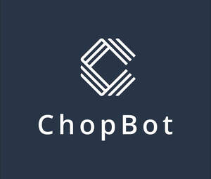

Trade Mark Journal No.2025/039 26 September 2025
UK00004261769 9 September 2025 (9,35,36,38,42)

- Class 9
- Telecommunications software; Computer software for use as an application programming interface (API); E-commerce and e-payment software; Internet of Things [IoT] gateways; Communications server software; Application software for mobile phones; Software for commerce over a global communications network; Internet messaging software; Artificial intelligence software for analysis; Artificial intelligence and machine learning software; Interactive software based on artificial intelligence; Business intelligence software; Software for embedding online advertising on websites; Computer software platforms for social networking; Computer chatbot software for simulating conversations; Computer e-commerce software to allow users to perform electronic business transactions via a global computer network; AI software; Instant messaging software.
- Class 35
- Providing business intelligence services; Providing market intelligence services; Business administration services for the processing of sales made on a global computer network; Advertisement via mobile phone networks; Analysis of business data; Business statistical analysis; Data entry and data processing.
- Class 36
- Payment processing; Payment card services; E-wallet payment services; Automated payment of accounts; Processing charge card transactions for others; Financial transfers and transactions, and payment services; Electronic commerce payment services; Electronic money transfer services; Bill payment services; Electronic payment services.
- Class 38
- Mobile telecommunications services; Telecommunication; Digital network telecommunications services; Geolocation services [telecommunications services]; Multimedia messaging services (MMS); Voice over Internet Protocol [VoIP] services; Web messaging; Messaging services; Transmission of data, messages and information; Voice and data transmission services; Transmission of data via the Internet.
- Class 42
- Telecommunications technology consultancy; Programming of telecommunications software; User authentication services using technology for e-commerce transactions; Providing user authentication services using biometric hardware and software technology for e-commerce transactions; Consulting in the field of cloud computing networks and applications; Development of software solutions for internet providers and internet users; Design and development of telecommunications networks; Consulting services in the field of software as a service [SaaS]; Software as a service [SAAS] services; Artificial intelligence consultancy; Artificial intelligence as a service (AIAAS); Technology consultation in the field of artificial intelligence; Research in the field of artificial intelligence technology; Providing artificial intelligence computer programs on data networks; Design and development of computer software for logistics, supply chain management and e-business portals; Maintenance of software used in the field of e-commerce; Constructing an internet platform for electronic commerce; Application service provider [ASP] services; Software as a service [SaaS] featuring computer software platforms for artificial intelligence.
Padraig Mark